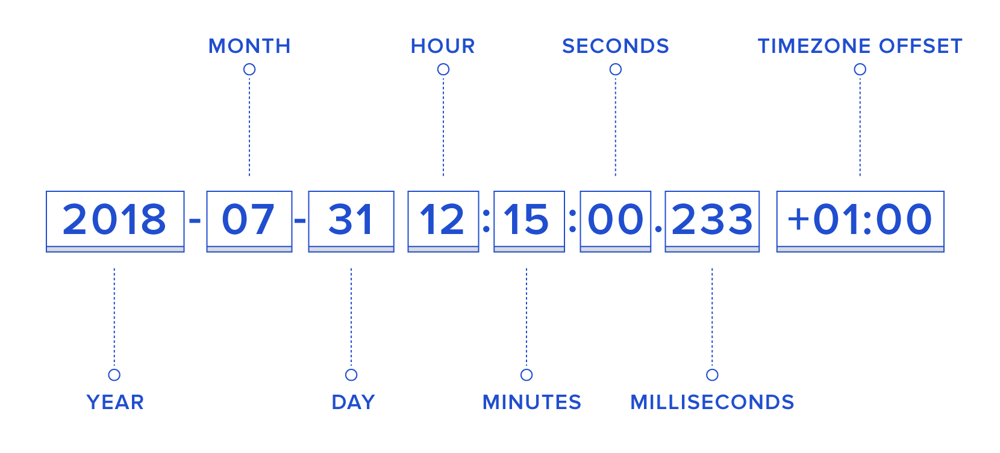
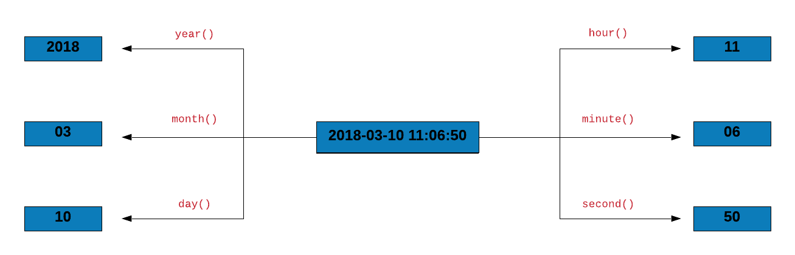
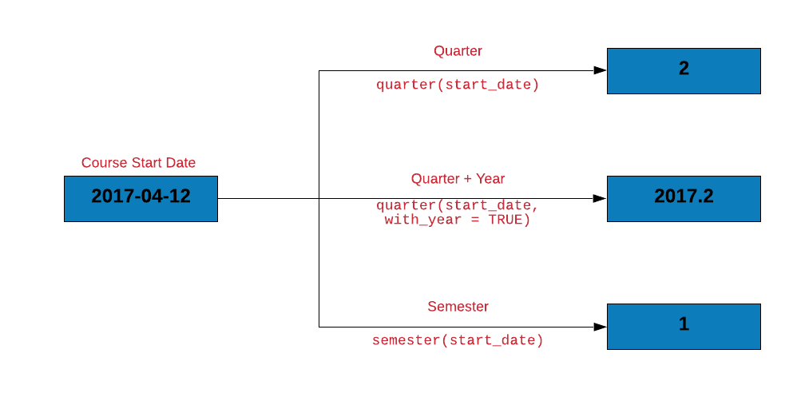

Sys.Date()[1] "2026-10-05"lubridate::today()[1] "2026-10-05"This chapter was split for readability. Arithmetic, intervals, time zones and rounding continue in @date-arithmetic-time-zones.
This chapter is the first of two on dates and times. Here we parse character data into dates and extract components (year, month, weekday, quarter). @date-arithmetic-time-zones continues with arithmetic, intervals, time zones, rounding and rollback.
Let us begin by looking at the current date and time.
Sys.Date() and today() will return the current date.
Sys.Date()[1] "2026-10-05"lubridate::today()[1] "2026-10-05"Sys.time() and now() return the date, time and the timezone. In now(), we can specify the timezone using the tzone argument.
Sys.time()[1] "2026-10-05 14:41:13 UTC"lubridate::now()[1] "2026-10-05 14:41:13 UTC"lubridate::now(tzone = "UTC")[1] "2026-10-05 14:41:13 UTC"am() and pm() allow us to check whether date/time occur in the am or pm? They return a logical value i.e. TRUE or FALSE
lubridate::am(now())[1] FALSElubridate::pm(now())[1] TRUEWe can also check if the current year is a leap year using leap_year().
lubridate::leap_year(Sys.Date())[1] FALSE| Function | Description |
|---|---|
| `Sys.Date()` | Current Date |
| `lubridate::today()` | Current Date |
| `Sys.time()` | Current Time |
| `lubridate::now()` | Current Time |
| `lubridate::am()` | Whether time occurs in am? |
| `lubridate::pm()` | Whether time occurs in pm? |
| `lubridate::leap_year()` | Check if the year is a leap year? |
Throughout the tutorial, we will work on a case study related to transactions of a imaginary company. The data set includes information about invoice and payment dates.
transact <- readr::read_csv('https://raw.githubusercontent.com/rsquaredacademy/datasets/master/transact.csv')# A tibble: 2,466 × 3
Invoice Due Payment
<date> <date> <date>
1 2013-01-02 2013-02-01 2013-01-15
2 2013-01-26 2013-02-25 2013-03-03
3 2013-07-03 2013-08-02 2013-07-08
4 2013-02-10 2013-03-12 2013-03-17
5 2012-10-25 2012-11-24 2012-11-28
6 2012-01-27 2012-02-26 2012-02-22
7 2013-08-13 2013-09-12 2013-09-09
8 2012-12-16 2013-01-15 2013-01-12
9 2012-05-14 2012-06-13 2012-07-01
10 2013-07-01 2013-07-31 2013-07-26
# ℹ 2,456 more rowsThe data set has 3 columns. All the dates are in the format (yyyy-mm-dd).
| Column | Description |
|---|---|
| Invoice | Invoice Date |
| Due | Due Date |
| Payment | Payment Date |
In the case study, we will try to answer a few questions we have about the transact data.
In this section, we will look at two things. First, how to create date/time data in R, and second, how to convert other data types to date/time. Let us begin by creating the latest R release date manually.
release_date <- 2019-12-12
release_date[1] 1995Okay! Why do we see 1995 when we call the date? What is happening here? Let us quickly check the data type of release_date.
class(release_date)[1] "numeric"The data type is numeric i.e. R has subtracted 12 twice from 2019 to return 1995. Clearly, the above method is not the right way to store date/time. Let us see if we can get some hints from the builtin R functions we used in the previous section. If you observe the output, all of them returned date/time wrapped in quotes. Hmmm… let us wrap our date in quotes and see what happens.
release_date <- "2019-12-12"
release_date[1] "2019-12-12"Alright, now R does not do any arithmetic and returns the date as we specified. Great! Is this the right format to store date/time? No. Why? What is the problem if date/time is saved as character/string? The problem is the nature or type of operations done on date or time is different when compared to string/character, number or logical values.
To answer the above questions, we will first check the data type of Sys.Date() and now().
class(Sys.Date())[1] "Date"class(lubridate::now())[1] "POSIXct" "POSIXt" class(release_date)[1] "character"As you can see from the above output, there are 3 different classes for storing date/time in R
DatePOSIXctPOSIXltLet us explore each of the above classes one by one.
The Date class represents calendar dates. Let us go back to Sys.Date(). If you check the class of Sys.Date(), it is Date. Internally, this date is a number i.e. an integer. The unclass() function will show dates are stored internally.
unclass(Sys.Date())[1] 20731What does this integer represent? Why has R stored the date as an integer? Before we answer this question, we need to know something else. In R, dates are represented as the number of days since 1970-01-01. All the dates in R are internally stored in this way. Before we explore this concept further, let us learn to create Date objects in R. We will continue to use the latest R release date, 2019-12-12.
Until now, we have stored the above date as character/string but now we will use as.Date() to save it as a Date object. as.Date() is the easiest and simplest way to create dates in R.
release_date <- as.Date("2019-12-12")
release_date[1] "2019-12-12"The as_date() function from the lubridate package is similar to as.Date().
release_date <- lubridate::as_date("2019-12-12")
release_date[1] "2019-12-12"If you look at the difference between release_date and 1970-01-01, it will be the same as unclass(release_date).
release_date - as.Date("1970-01-01")Time difference of 18242 daysunclass(release_date)[1] 18242Let us come back to 1970-01-01 i.e. the origin for dates in R.
lubridate::origin[1] "1970-01-01 UTC"From the previous examples, we know that dates are internally stored as number of days since 1970-01-01. How about dates older than the origin? How are they stored? Let us look at that briefly.
unclass(as.Date("1963-08-28"))[1] -2318Dates older than the origin are stored as negative integers. For those who are not aware, Martin Luther King, Jr. delivered his famous I Have a Dream speech on 1963-08-28. Let us move on and learn how to convert numbers into dates.
The as.Date() function can be used to convert any of the following to a Date object
We have explored how to convert strings to date. How about converting numbers to date? Sure, we can create date from numbers by specifying the origin and number of days since it.
as.Date(18242, origin = "1970-01-01")[1] "2019-12-12"The origin can be changed to another date (while changing the number as well.)
as.Date(7285, origin = "2000-01-01")[1] "2019-12-12"
If you have carefully observed, the format in which we have been specifying the dates as well as of those returned by functions such as Sys.Date() or Sys.time() is the same i.e. YYYY-MM-DD. It includes
The month and date separated by -. This default format used in R is the ISO 8601 standard for date/time. ISO 8601 is the internationally accepted way to represent dates and times and uses the 24 hour clock system. Let us create the release date using another function ISOdate().
ISOdate(year = 2019,
month = 12,
day = 12,
hour = 8,
min = 5,
sec = 3,
tz = "UTC")[1] "2019-12-12 08:05:03 UTC"We will look at all the different weird ways in which date/time are specified in the real world in the Date & Time Formats section. For the time being, let us continue exploring date/time classes in R. The next class we are going to look at is POSIXct/POSIXlt.
You might be wondering what is this POSIX thing? POSIX stands for Portable Operating System Interface. It is a family of standards specified f or maintaining compatibility between different operating systems. Before we learn to create POSIX objects, let us look at now() from lubridate.
class(lubridate::now())[1] "POSIXct" "POSIXt" now() returns current date/time as a POSIXct object. Let us look at its internal representation using unclass()
unclass(lubridate::now())[1] 1791211274
attr(,"tzone")
[1] ""The output you see is the number of seconds since January 1, 1970.
POSIXct represents the number of seconds since the beginning of 1970 (UTC) and ct stands for calendar time. To store date/time as POSIXct objects, use as.POSIXct(). Let us now store the latest R release date as POSIXct as shown below
release_date <- as.POSIXct("2019-12-12 08:05:03")
class(release_date)[1] "POSIXct" "POSIXt" unclass(release_date) [1] 1576137903
attr(,"tzone")
[1] ""POSIXlt represents the following information in a list
The lt in POSIXlt stands for local time. Use as.POSIXlt() to store date/time as POSIXlt objects. Let us store the release date as a POSIXlt object as shown below
release_date <- as.POSIXlt("2019-12-12 08:05:03")
release_date[1] "2019-12-12 08:05:03 UTC"As we said earlier, POSIXlt stores date/time components in a list and these can be extracted. Let us look at the date/time components returned by POSIXlt using unclass().
release_date <- as.POSIXlt("2019-12-12 08:05:03")
unclass(release_date)$sec
[1] 3
$min
[1] 5
$hour
[1] 8
$mday
[1] 12
$mon
[1] 11
$year
[1] 119
$wday
[1] 4
$yday
[1] 345
$isdst
[1] 0
$zone
[1] "UTC"
$gmtoff
[1] 0
attr(,"tzone")
[1] "UTC"
attr(,"balanced")
[1] TRUEUse unlist() if you want the components returned as a vector.
release_date <- as.POSIXlt("2019-12-12 08:05:03")
unlist(release_date) sec min hour mday mon year wday yday isdst zone gmtoff
"3" "5" "8" "12" "11" "119" "4" "345" "0" "UTC" "0" To extract specific components, use $.
release_date <- as.POSIXlt("2019-12-12 08:05:03")
release_date$hour[1] 8release_date$mon[1] 11release_date$zone[1] "UTC"Now, let us look at the components returned by POSIXlt. Some of them are intuitive
| Component | Description |
|---|---|
| `sec` | Second |
| `min` | Minute |
| `hour` | Hour of the day |
| `mon` | Month of the year (0-11 |
| `zone` | Timezone |
| `wday` | Day of week |
| `mday` | Day of month |
| `year` | Years since 1900 |
| `yday` | Day of year |
| `isdst` | Daylight saving flag |
| `gmtoff` | Offset is seconds from GMT |
Great! We will end this section with a few tips/suggestions on when to use Date or POSIXct/POSIXlt.
Date when there is no time componentPOSIX when dealing with time and timezonesPOSIXlt when you want to access/extract the different componentsR 1.0.0 was released on 2000-02-29 08:55:23 UTC. Save it as
Date using characterDate using origin and numberPOSIXctPOSIXlt and extract
After the timezones and daylight savings detour, let us get back on path and explore another important aspect, date & time formats. Although it is a good practice to adher to ISO 8601 format, not all date/time data will comply with it. In real world, date/time data may come in all types of weird formats. Below is a sample
| Format |
|---|
| December 12, 2019 |
| 12th Dec, 2019 |
| Dec 12th, 19 |
| 12-Dec-19 |
| 2019 December |
| 12.12.19 |
When the data is not in the default ISO 8601 format, we need to explicitly specify the format in R. We do this using conversion specifications. A conversion specification is introduced by %, usually followed by a single letter or O or E and then a single letter.
| Specification | Description | Example |
|---|---|---|
| `%d` | Day of the month (decimal number) | 12 |
| `%m` | Month (decimal number) | 12 |
| `%b` | Month (abbreviated) | Dec |
| `%B` | Month (full name) | December |
| `%y` | Year (2 digit) | 19 |
| `%Y` | Year (4 digit) | 2019 |
| %H | Hour | 8 |
| %M | Minute | 5 |
| %S | Second | 3 |
Time to work through a few examples. Let us say you are dealing with dates in the format 19/12/12. In this format, the year comes first followed by month and the date; each separated by a backslash (/). The year consists of only 2 digits i.e. it does not include the century. Let us now map each component of the date to the format table shown at the beginning.
| Date | Specification |
|---|---|
| 19 | `%y` |
| 12 | `%m` |
| 12 | `%d` |
Using the format argument, we will specify the date format as a character vector i.e. enclosed in quotes.
as.Date("19/12/12", format = "%y/%m/%d")[1] "2019-12-12"Another way in which the release data can be written is 2019-Dec-12. We still have the year followed by the month and the date but there are a few changes here:
- instead of /Let us map the components to the format table:
| Date | Specification |
|---|---|
| 2019 | `%Y` |
| Dec | `%b` |
| 12 | `%d` |
Let us specify the format for the date using the above mapping.
as.Date("2019-Dec-12", format = "%Y-%b-%d")[1] "2019-12-12"In both the above examples, we have not dealt with time components. Let us include the time of the latest R release in the next one i.e. 19/12/12 08:05:03.
| Date | Specification |
|---|---|
| 19 | `%y` |
| 12 | `%m` |
| 12 | `%d` |
| 08 | `%H` |
| 05 | `%M` |
| 03 | `%S` |
Since we are dealing with time, we will use as.POSIXct() instead of as.Date().
as.POSIXct("19/12/12 08:05:03", tz = "UTC", format = "%y/%m/%d %H:%M:%S")[1] "2019-12-12 08:05:03 UTC"In the below table, we look at some of the most widely used conversion specifications. You can learn more about these specifications by running ?strptime or help(strptime).
| Specification | Description |
|---|---|
| `%a` | Abbreviated weekday |
| `%A` | Full weekday |
| `%C` | Century (00-99) |
| `%D` | Same as `%m/%d/%y` |
| `%e` | Day of month [1 - 31] |
| `%F` | Same as `%Y-%m-%d` |
| `%h` | Same as `%b` |
| `%I` | Hours as decimal [01 - 12] |
| `%j` | Day of year [001 - 366] |
| `%R` | Same as `%H:%M` |
| `%t` | Tab |
| `%T` | Same as `%H:%M:%S` |
| `%u` | Weekday [1 - 7](Monday is 1) |
| `%U` | Week of year [00 - 53] |
| `%V` | Week of year [01 - 53] |
| `%w` | Weekday [0 - 6](sunday is 0) |
| `%W` | Week of year [00 - 53] |
We have included a lot of practice questions for you to explore the different date/time formats. The solutions are available in the Learning Management system as well as in our GitHub repo. Try them and let us know if you have any doubts.
guess_formats() from lubridate is a very useful function. It will guess the date/time format if you specify the order in which year, month, date, hour, minute and second appear.
release_date_formats <- c("December 12th 2019",
"Dec 12th 19",
"dec 12 2019")
guess_formats(release_date_formats,
orders = "mdy",
print_matches = TRUE) Omdy mdy
[1,] "December 12th 2019" "%Om %dth %Y" "%B %dth %Y"
[2,] "Dec 12th 19" "%Om %dth %y" "%b %dth %y"
[3,] "dec 12 2019" "%Om %d %Y" "%b %d %Y" Omdy Omdy Omdy mdy mdy
"%Om %dth %Y" "%Om %dth %y" "%Om %d %Y" "%B %dth %Y" "%b %dth %y"
mdy
"%b %d %Y" Below, we have specified July 5th, 2019 in different ways. Create the date using as.Date() while specifying the correct format for each of them.
July-05-19JUL-05-1905.07.195-July 2019July 5th, 2019July 05, 20192019-July- 0505/07/201907/05/20197/5/201907/5/192019-07-05While creating date-time objects, we specified different formats using the conversion specification but most often you will not create date/time and instead deal with data thay comes your way from a system or colleague/collaborator. In such cases, we need to be able to parse date/time from the data provided to us. In this section, we will focus on parsing date/time from character data. Both base R and the lubridate package offer functions to parse date and time and we will explore a few of them in this section. We will initially use functions from base R and later on explore those from lubridate which will give us an opportunity to compare and contrast. It will also allow us to choose the functions based on the data we are dealing with.
strptime() will convert character data to POSIXlt. You will use this when converting from character data to date/time. On the other hand, if you want to convert date/time to character data, use any of the following:
strftime()format()as.character()The above functions will convert POSIXct/POSIXlt to character. Let us start with a simple example. The data we have been supplied has date/time as character data and in the format YYYYMMDD i.e. nothing separates the year, month and date from each other. We will use strptime() to convert this to an object of class POSIXlt.
rel_date <- strptime("20191212", format = "%Y%m%d")
class(rel_date)[1] "POSIXlt" "POSIXt" If you have a basic knowledge of conversion specifications, you can use strptime() to convert character data to POSIXlt. Let us quickly explore the functions to convert date/time to character data before moving on to the functions from lubridate.
rel_date_strf <- strftime(rel_date)
class(rel_date_strf)[1] "character"rel_date_format <- format(rel_date)
class(rel_date_format)[1] "character"rel_date_char <- as.character(rel_date)
class(rel_date_char)[1] "character"As you can see, all the 3 functions converted date/time to character. Time to move on and explore the lubridate package. We will start with an example in which the release date is formatted in 3 different ways but they have one thing in common i.e. the order in which the components appear. In all the 3 formats, the year is followed by the month and then the date.
To parse the release date, we will use parse_date_time() from lubridate which parses the input into POSIXct objects.
release_date <- c("19-12-12", "20191212", "19-12 12")
parse_date_time(release_date, "ymd")[1] "2019-12-12 UTC" "2019-12-12 UTC" "2019-12-12 UTC"parse_date_time(release_date, "y m d")[1] "2019-12-12 UTC" "2019-12-12 UTC" "2019-12-12 UTC"parse_date_time(release_date, "%y%m%d")[1] "2019-12-12 UTC" "2019-12-12 UTC" "2019-12-12 UTC"Try to use strptime() in the above example and see what happens. Now, let us look at another data set.
release_date <- c("19-07-05", "2019-07-05", "05-07-2019", "07-05-2019")What happens in the below case? The same date appears in multiple formats. How do we parse them? parse_date_time() allows us to specify mutiple date-time formats. Let us first map the dates to their formats.
| Date | Specification |
|---|---|
| 19-07-05 | `ymd` |
| 2019-07-05 | `ymd` |
| 05-07-2019 | `dmy` |
| 07-05-2019 | `mdy` |
The above specifications can be supplied as a character vector.
parse_date_time(release_date, c("ymd", "ymd", "dmy", "mdy"))[1] "2019-07-05 UTC" "2019-07-05 UTC" "2019-07-05 UTC" "2019-05-07 UTC"Great! We have used both strptime() and parse_date_time() now. Can you tell what differentiates parse_date_time() when compared to strptime()? We summarize it in the points below:
% prefix or separatorThere are other helper functions that can be used to
and are explored in the below examples.
# year/month/date
ymd("2019-12-12")[1] "2019-12-12"# year/month/date
ymd("19/12/12")[1] "2019-12-12"# date/month/year
dmy(121219)[1] "2019-12-12"# year/month/date/hour/minute/second
ymd_hms(191212080503)[1] "2019-12-12 08:05:03 UTC"# hour/minute/second
hms("8, 5, 3")[1] "8H 5M 3S"# hour/minute/second
hms("08:05:03")[1] "8H 5M 3S"# minute/second
ms("5,3")[1] "5M 3S"# hour/minute
hm("8, 5")[1] "8H 5M 0S"Note, in a couple of cases where the components are not separated by /, - or space, we have not enclosed the values in quotes.
Below, we have specified July 5th, 2019 in different ways. Parse the dates using strptime() or parse_date_time() or any other helper function.
July-05-19JUL-05-1905.07.195-July 2019July 5th, 2019July 05, 20192019-July- 0505/07/201907/05/20197/5/201907/5/192019-07-05In the second section, we discussed the downside of saving date/time as character/string in R. One of the points we discussed was that we can’t extract components such as year, month, day etc. In this section, we will learn to extract date/time components such as

The below table outlines the functions we will explore in the first part of this section.
| Function | Description |
|---|---|
| `year()` | Get year |
| `month()` | Get month (number) |
| `month(label = TRUE)` | Get month (abbreviated name) |
| `month(abbr = FALSE)` | Get month (full name) |
| `months()` | Get month |
| `week()` | Get week |
release_date <- ymd_hms("2019-12-12 08:05:03")
year(release_date) [1] 2019month() will return the month as a number i.e. 07 for July.
month(release_date)[1] 12If you want the name of the month instead, use the label argument and set it to TRUE. Now it returns Jul instead of 07.
month(release_date, label = TRUE)[1] Dec
12 Levels: Jan < Feb < Mar < Apr < May < Jun < Jul < Aug < Sep < ... < DecBut this is the abbreviated name and not the full name. How do we get the full name of the month? Set the abbr argument to FALSE.
month(release_date, label = TRUE, abbr = FALSE)[1] December
12 Levels: January < February < March < April < May < June < ... < DecemberAh! now we can see the full name of the month. months() from base R will return the full name of the month by default. If you want the abbreviated name, use the abbreviate argument and set it to TRUE.
months(release_date)[1] "December"week() returns the number of complete 7 day periods between the date and 1st January plus one.
week(release_date)[1] 50Use day() to extract the date component. There are other variations such as
| Function | Description |
|---|---|
| `day` | Get day |
| `mday()` | Day of the month |
| `wday()` | Day of the week |
| `qday()` | Day of quarter |
| `yday()` | Day of year |
| `weekdays()` | Day of week |
| `days_in_month()` | Days in the month |
day(release_date)[1] 12mday(release_date) [1] 12qday(release_date) [1] 73yday(release_date) [1] 346wday can return
wday(release_date) [1] 5wday(release_date, label = TRUE)[1] Thu
Levels: Sun < Mon < Tue < Wed < Thu < Fri < Satwday(release_date, label = TRUE, abbr = FALSE) [1] Thursday
7 Levels: Sunday < Monday < Tuesday < Wednesday < Thursday < ... < Saturdayweekdays() from base R also returns the day of the week (the name and not the number). If you want the abbreviated name, use the abbreviate argument.
weekdays(release_date)[1] "Thursday"weekdays(release_date, abbreviate = TRUE)[1] "Thu"If you want to know the number of days in the month, use days_in_month(). In our example, the month is December and it has 31 days.
days_in_month(release_date)Dec
31 | Function | Description |
|---|---|
| `hour()` | Get hour |
| `minute()` | Get minute |
| `second()` | Get second |
| `seconds()` | Number of seconds since `1970-01-01` |
So far we have been looking at date components. Now, let us look at time components.
hour(release_date)[1] 8minute(release_date)[1] 5second(release_date)[1] 3seconds() returns the number of seconds since 1970-01-01.
seconds(release_date)[1] "1576137903S"
quarter() will return the quarter from the date. December is in the 4th quarter and hence it returns 4.
quarter(release_date)[1] 4If you want the year along with the quarter, set the with_year argument to TRUE.
quarter(release_date, with_year = TRUE)[1] 2019.4In India, the fiscal starts in April and December falls in the 3rd quarter. How can we accommodate this change? The fiscal_start argument allows us to set the month in which the fiscal begins. We will set it to 4 for April. Now it returns 3 instead of 4.
quarter(release_date, fiscal_start = 4) [1] 3quarters() from base R also returns the quarter.
quarters(release_date)[1] "Q4"| Function | Description |
|---|---|
| `quarter()` | Get quarter |
| `quarter(with_year = TRUE)` | Quarter with year |
| `quarter(fiscal_start = 4)` | Fiscal starts in April |
| `quarters()` | Get quarter |
| `semester()` | Get semester |
Let us now extract the date, month and year from the Due column.
transact |>
mutate(
due_day = day(Due),
due_month = month(Due),
due_year = year(Due)
)# A tibble: 2,466 × 6
Invoice Due Payment due_day due_month due_year
<date> <date> <date> <int> <dbl> <dbl>
1 2013-01-02 2013-02-01 2013-01-15 1 2 2013
2 2013-01-26 2013-02-25 2013-03-03 25 2 2013
3 2013-07-03 2013-08-02 2013-07-08 2 8 2013
4 2013-02-10 2013-03-12 2013-03-17 12 3 2013
5 2012-10-25 2012-11-24 2012-11-28 24 11 2012
6 2012-01-27 2012-02-26 2012-02-22 26 2 2012
7 2013-08-13 2013-09-12 2013-09-09 12 9 2013
8 2012-12-16 2013-01-15 2013-01-12 15 1 2013
9 2012-05-14 2012-06-13 2012-07-01 13 6 2012
10 2013-07-01 2013-07-31 2013-07-26 31 7 2013
# ℹ 2,456 more rowsLet us do some data sanitization. If the due day happens to be February 29, let us ensure that the due year is a leap year. Below are the steps to check if the due year is a leap year:
is_leap which will have be set to TRUE if the year is a leap year else it will be set to FALSEDueis_leaptransact |>
mutate(
due_day = day(Due),
due_month = month(Due),
due_year = year(Due),
is_leap = leap_year(due_year)
) |>
filter(due_month == 2 & due_day == 29) |>
select(Due, is_leap) # A tibble: 4 × 2
Due is_leap
<date> <lgl>
1 2012-02-29 TRUE
2 2012-02-29 TRUE
3 2012-02-29 TRUE
4 2012-02-29 TRUE Let us count the invoices due for each quarter.
transact |>
mutate(
quarter_due = quarter(Due)
) |>
count(quarter_due)# A tibble: 4 × 2
quarter_due n
<int> <int>
1 1 521
2 2 661
3 3 618
4 4 666Using the transact data, tabulate the following from the Due column:
In the second section, we learnt to create date-time objects using as.Date(), as.POSIXct() etc. In this section, we will explore a few other functions that will allow us to do the same
make_date()make_datetime()To create date without time components, use make_date() and specify the following:
We need to specify all the components in numbers i.e. we cannot use Jul or July for the month. It has to be 7.
make_date(year = 2019,
month = 12,
day = 12)[1] "2019-12-12"When you need to include time components, use make_datetime().
make_datetime(year = 2019,
month = 12,
day = 12,
hour = 08,
min = 05,
sec = 03,
tz = "UTC")[1] "2019-12-12 08:05:03 UTC"Let us look at another scenario. You have a date-time object and want to change one of its components i.e. any of the following
Instead of creating another date-time object, you can change any of the components using update(). In the below example, we will start with the date of release of R version 3.6.1 and using update(), we will change it to 2019-12-12.
prev_release <- ymd("2019-07-05")
prev_release |>
update(year = 2019,
month = 12,
mday = 12)[1] "2019-12-12"So far we have created a single date-time instance. How about creating a sequence of dates? We can do that using seq.Date(). We need to specify the from date as the bare minimum input. If the end date is not specified, it will create the sequence uptil the current date.
The interval of the sequence can be specified in any of the following units:
We can add the following to the interval units
+ / - (increment or decrement)Using the integer, we can specify multiples of the units mentioned and using the sign, we can specify whether to increment or decrement.
The below table displays the main arguments used in seq.Date():
| Function | Description |
|---|---|
| `from` | Starting date of the sequence |
| `by` | End date of the sequence |
| `to` | Date increment of the sequence |
| `length.out` | Length of the sequence |
| `along.with` | Use length of this value as length of sequence |
In the first example, we will create a sequence of dates from 2010-01-01 to 2019-12-31. The unit of increment should be a year i.e. the difference between the dates in the sequence should be 1 year, specified using the by argument.
seq.Date(from = as.Date("2010-01-01"), to = as.Date("2019-12-31"), by = "year") [1] "2010-01-01" "2011-01-01" "2012-01-01" "2013-01-01" "2014-01-01"
[6] "2015-01-01" "2016-01-01" "2017-01-01" "2018-01-01" "2019-01-01"In the next example, we change the unit of increment to a quarter i.e. the difference between the dates in the sequence should be a quarter or 3 months.
seq.Date(from = as.Date("2009-12-12"), to = as.Date("2019-12-12"), by = "quarter") [1] "2009-12-12" "2010-03-12" "2010-06-12" "2010-09-12" "2010-12-12"
[6] "2011-03-12" "2011-06-12" "2011-09-12" "2011-12-12" "2012-03-12"
[11] "2012-06-12" "2012-09-12" "2012-12-12" "2013-03-12" "2013-06-12"
[16] "2013-09-12" "2013-12-12" "2014-03-12" "2014-06-12" "2014-09-12"
[21] "2014-12-12" "2015-03-12" "2015-06-12" "2015-09-12" "2015-12-12"
[26] "2016-03-12" "2016-06-12" "2016-09-12" "2016-12-12" "2017-03-12"
[31] "2017-06-12" "2017-09-12" "2017-12-12" "2018-03-12" "2018-06-12"
[36] "2018-09-12" "2018-12-12" "2019-03-12" "2019-06-12" "2019-09-12"
[41] "2019-12-12"We will now create a sequence of dates but instead of specifying the unit of increment, we specify the number of dates in the sequence i.e. the length of the sequence. We do this using the length.out argument which specifies the desired length of the sequence. We want the sequence to have 10 dates including the start and end date, and hence we supply the value 10 for the length.out argument.
seq.Date(from = as.Date("2010-01-01"), to = as.Date("2019-12-31"), length.out = 10) [1] "2010-01-01" "2011-02-10" "2012-03-22" "2013-05-02" "2014-06-11"
[6] "2015-07-22" "2016-08-31" "2017-10-10" "2018-11-20" "2019-12-31"In all of the previous examples, we have specified both the start and the end date. Let us look at a few examples where we create a sequence of dates where we only specify the start date. In the below example, we want to create a sequence of dates starting from 2010-01-01. The unit of increment should be 1 year i.e. the difference between the dates in the sequence should be 1 year and the length of the sequence should be 10 i.e. the number of dates including the start date should be 10.
seq.Date(from = as.Date("2010-01-01"), by = "year", length.out = 10) [1] "2010-01-01" "2011-01-01" "2012-01-01" "2013-01-01" "2014-01-01"
[6] "2015-01-01" "2016-01-01" "2017-01-01" "2018-01-01" "2019-01-01"The unit of increment can include multiples and +/- sign i.e. it can be an unit of increment or decrement. In the next example, we can increment the dates in the sequence by 2 i.e. the difference between the dates should be 2 instead of 1. This is achieved by specifying the unit of increment (multiple) first followed by a space and then the unit. In our example, it is 2 year. As you can see, the sequence now goes all the way till 2028 and the gap between the dates is 2 years.
seq.Date(from = as.Date("2010-01-01"), by = "2 year", length.out = 10) [1] "2010-01-01" "2012-01-01" "2014-01-01" "2016-01-01" "2018-01-01"
[6] "2020-01-01" "2022-01-01" "2024-01-01" "2026-01-01" "2028-01-01"Let us say instead of increment we want to decrement the dates i.e. the sequence of dates will go backwards as shown in the next example. We achieve this by using the - sign along with the unit of decrement. The sequence of dates in next example starts from 2010 and goes back upto 1992 and the difference between the dates in 2 years.
seq.Date(from = as.Date("2010-01-01"), by = "-2 year", length.out = 10) [1] "2010-01-01" "2008-01-01" "2006-01-01" "2004-01-01" "2002-01-01"
[6] "2000-01-01" "1998-01-01" "1996-01-01" "1994-01-01" "1992-01-01"In the last example, we will explore the along.with argument. Here we have supplied a vector which is a sequence of numbers from 1 to 10. The length of this vector is 10 and the same length is used as the length of the sequence i.e. the length of value supplied to along.with is also the length of the sequence.
seq.Date(from = as.Date("2010-01-01"), by = "-2 year", along.with = 1:10) [1] "2010-01-01" "2008-01-01" "2006-01-01" "2004-01-01" "2002-01-01"
[6] "2000-01-01" "1998-01-01" "1996-01-01" "1994-01-01" "1992-01-01"How do you check if the data is a date-time object? You can do that using any of the following from the lubridate package.
is.Date()is.POSIXct()is.POSIXlt()is.Date(release_date)[1] FALSEis.POSIXct(release_date)[1] TRUEis.POSIXlt(release_date)[1] FALSER 2.0.0 was released on 2004-10-04 14:24:38. Create this date using both make_date() and make_datetime()
R 3.0.0 was released on 2013-04-03 07:12:36. Update the date created in the previous step to the above using update()
Edit the code below and press Run. It executes entirely in your browser via WebR — no R installation needed. The runtime downloads once, on this page only.